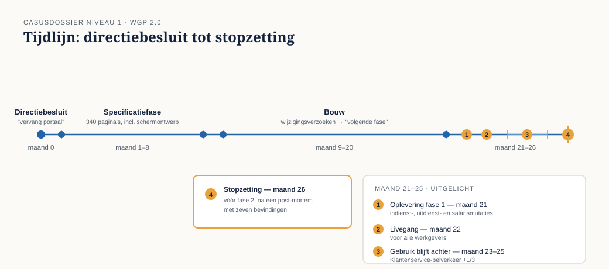

Casusdossier niveau 1 — De herstart na WGP 2.0
Ductus-cursus Business-analyse · niveau 1 (fundament) · behorend bij deel 1 t/m 10
Dit dossier hoort bij niveau 1 van de cursus business-analyse. Het is zelfstandig leesbaar en volledig: deelnemers hebben geen ander cursusmateriaal nodig om ermee te werken. Waar dezelfde organisatie in andere Ductus-cursussen voorkomt, is het dossier bewust apart gehouden — overeenkomsten zijn geen afhankelijkheden.
1. Meridiaan Pensioen
Meridiaan Pensioen is een Nederlandse pensioenuitvoerder. De organisatie voert de pensioenregelingen uit van zeven aangesloten fondsen en beheert daarnaast een eigen verzekerd portefeuilledeel.
| Deelnemers | ruim 1,2 miljoen (actief, gewezen en gepensioneerd) |
| Aangesloten werkgevers | ongeveer 4.800 |
| Medewerkers | ongeveer 1.100 |
| Vestigingen | hoofdkantoor Utrecht, uitvoeringslocatie Zwolle |
Relevante afdelingen voor deze casus:
- Uitvoering (Zwolle, ± 260 medewerkers) — verwerkt deelnemer- en werkgevermutaties, berekent premies, handelt uitzonderingen af.
- Klantenservice werkgevers (Utrecht, ± 45 medewerkers) — het telefonische en schriftelijke aanspreekpunt voor werkgevers.
- IT en Verandering — bestaat uit een kleine eigen ontwikkelafdeling en een vaste externe leverancier voor portalen en koppelvlakken.
- Beleid en Actuariaat — vertaalt wet- en regelgeving naar uitvoerbare regels.
Het kernsysteem is een polisadministratie die medio jaren negentig is gebouwd en sindsdien doorlopend is uitgebreid. Vrijwel elke verandering bij Meridiaan raakt dit systeem op enig punt.
2. Wat een werkgever bij Meridiaan moet doen
Werkgevers melden mutaties: indiensttredingen, uitdiensttredingen, salariswijzigingen, wijzigingen in deeltijdfactor, correcties met terugwerkende kracht, en jaarlijks de loonopgave. Er zijn drie kanalen:
- Het werkgeversportaal — schermen waarin een mutatie per persoon wordt ingevoerd.
- Bestandsaanlevering — grotere werkgevers leveren periodiek een bestand uit hun salarispakket.
- E-mail en telefoon — voor alles wat via de eerste twee kanalen niet lukt: correcties, uitzonderingen, vragen.
Het derde kanaal is officieel geen kanaal. In de praktijk loopt er een aanzienlijk deel van het werk doorheen. Bij Klantenservice werkgevers is dat algemeen bekend; in de projectdocumentatie van WGP 2.0 komt het niet voor.
3. WGP 2.0 — wat er gebeurde
Werkgeversportaal 2.0 was het programma dat het bestaande werkgeversportaal moest vervangen. De aanleiding, zoals genoteerd in het projectvoorstel: het bestaande portaal was verouderd, zag er gedateerd uit, en werkgevers klaagden.
Verloop:
| Wanneer | Wat |
|---|---|
| Maand 0 | Directiebesluit: "we vervangen het werkgeversportaal". Budget en einddatum vastgesteld vóór de analyse begon. |
| Maand 1-7 | Specificatiefase. Twee analisten leggen wensen vast in een functioneel ontwerp van 340 pagina's, inclusief schermontwerpen. |
| Maand 8 | Specificatie getekend door de stuurgroep. Aanbesteding bij de vaste leverancier. |
| Maand 9-20 | Bouw. Wijzigingsverzoeken worden verzameld voor "een volgende fase". |
| Maand 21 | Oplevering fase 1: indienst-, uitdienst- en salarismutaties. |
| Maand 22 | Livegang voor alle werkgevers. |
| Maand 23-25 | Gebruik blijft ver achter. Het aantal e-mails en telefoontjes bij Klantenservice werkgevers stijgt met ruim een derde ten opzichte van het jaar ervoor. |
| Maand 26 | De stuurgroep stopt het programma vóór fase 2. Er volgt een post-mortem. |
De opgeleverde software werkt. Er zijn nauwelijks storingen. Dat is precies wat de post-mortem zo ongemakkelijk maakt: er is niets stukgegaan, en toch is er niets bereikt.

4. De post-mortem: zeven bevindingen
De post-mortem is uitgevoerd door een externe onderzoeker en besproken in het MT. De zeven bevindingen zijn opvallend eensluidend: geen ervan gaat over techniek, planning of leveranciersprestatie. Alle zeven gaan over analyse.
B1 — De opdracht was een oplossing, geen probleem. Het directiebesluit luidde "vervang het werkgeversportaal". Nergens in de documentatie staat welk probleem daarmee zou worden opgelost, voor wie, of hoe groot dat probleem was.
B2 — Het beoogde verschil is nooit benoemd. Als doel is vastgelegd: moderniseren, verbeteren van de gebruikerservaring, klaar zijn voor de toekomst. Geen van deze doelen benoemt wie er straks iets anders doet of wat dat oplevert.
B3 — De analisten noteerden; zij vroegen niet door. Uit de gespreksverslagen blijkt dat wensen zijn vastgelegd zoals ze werden uitgesproken. Er zijn geen aantekeningen waaruit blijkt dat iemand heeft gevraagd waarom een wens er was, hoe vaak de situatie voorkwam, of wat er zou gebeuren als de wens niet werd ingewilligd.
B4 — De aanpak is nooit gekozen, alleen overgenomen; en specificatie en ontwerp liepen door elkaar. Dat er eerst een volledige specificatie moest komen en daarna gebouwd zou worden, is nergens afgewogen. Bovendien bevatte de specificatie schermontwerpen tot op veldniveau, waardoor de leverancier geen ruimte had om met een betere oplossing te komen — en waardoor niemand meer kon zien welke eis nu een behoefte was en welke een ontwerpkeuze.
B5 — De scope was het portaal; het omliggende werk viel erbuiten. Na livegang bleek dat vier op de tien mutaties niet via het nieuwe portaal konden worden afgehandeld: correcties met terugwerkende kracht, samenloop van gebeurtenissen, werkgevers met meerdere regelingen. Die gevallen gingen terug naar e-mail en telefoon. Ze waren bekend bij Uitvoering en Klantenservice, maar zijn nooit opgehaald.
B6 — Er is gesproken met drie werkgevers en met niemand binnen. De drie geraadpleegde werkgevers waren de drie grootste. Zij leveren hun mutaties per bestand aan en gebruiken het portaal nauwelijks. De ruim vierduizend kleine werkgevers, die het portaal wél gebruiken, zijn niet gesproken. Uitvoering en Klantenservice werkgevers evenmin.
B7 — Er is nooit afgesproken waaraan succes gemeten zou worden. Er waren geen maatstaven. Daardoor kon na livegang niemand aantonen dat het niet werkte — er waren alleen indrukken — en, ernstiger, merkte niemand het tijdig. De stijging bij Klantenservice werd pas na drie maanden aan het portaal gekoppeld.
Voor de docent en de deelnemer: deze zeven bevindingen zijn de rode draad van niveau 1. Elk deel sluit er één (deel 1, 2, 3, 4, 5, 7 en 9); in deel 10 verdedigt de deelnemer alle zeven in samenhang. De delen 6 en 8 sluiten geen bevinding — daar wordt gereedschap gebouwd dat later nodig is.
5. De herstart
Het MT wil het niet laten liggen: het probleem achter WGP 2.0 — wat dat ook is — bestaat nog steeds, en de Wet toekomst pensioenen komt eraan. Er wordt een kleine herstartgroep gevormd met de opdracht om eerst te bepalen wat er eigenlijk moet veranderen, en pas daarna te praten over een oplossing.
6. Personages
Merel Duijvestein — hoofdpersoon. Werkt ruim twee jaar bij Klantenservice werkgevers en kent de uitvoeringspraktijk van binnenuit: ze weet welke mutaties stuklopen, welke werkgevers structureel bellen en waarom. Ze wordt gevraagd voor de herstartgroep "omdat zij als enige weet hoe het werk echt loopt". Ze krijgt de rol van business analyst zonder de opleiding te hebben gehad. Haar intuïtie klopt vaak; haar onderbouwing niet. Dat verschil is wat zij in dit niveau leert maken.
Hanneke Steenbergen — directeur Uitvoering, opdrachtgever van de herstart. Was in de stuurgroep van WGP 2.0 en heeft de specificatie getekend. Wil dit keer weten waar ze ja tegen zegt. Zakelijk, kort van stof, niet onredelijk.
Ruud Kalsbeek — manager Klantenservice werkgevers, Merels leidinggevende. Heeft tijdens WGP 2.0 herhaaldelijk gewaarschuwd en is niet gehoord. Loopt het risico gelijkhebberig te worden; dat is didactisch nuttig.
Pim Vroegop — teamleider Uitvoering in Zwolle. Zeer bereid om te helpen, mits iemand de moeite neemt naar Zwolle te komen. Kent de uitzonderingen die niemand heeft opgeschreven.
Ayla Demir — informatieanalist bij IT en Verandering, werkte mee aan WGP 2.0. Schreef destijds op wat haar werd verteld. Voelt zich medeverantwoordelijk en is daardoor eerlijk over wat er misging.
Gerard Hoogewerf — eigenaar van een installatiebedrijf met elf medewerkers, een van de vierduizend kleine werkgevers. Doet zijn mutaties zelf, 's avonds. Verschijnt vanaf deel 6 als degene die nooit iets is gevraagd.
Wilma Prins — salarisadministrateur bij een grote werkgever, een van de drie die destijds wél zijn gesproken. Gebruikt het portaal zelf nauwelijks.
7. Gebruik van dit dossier
- Het dossier wordt in deel 1 in zijn geheel uitgereikt. Deelnemers lezen het vóór de eerste bijeenkomst.
- Per deel komen er kleine dossierstukken bij (een gespreksverslag, een cijferoverzicht, een e-mailwisseling). Die staan in het werkboek van het betreffende deel, niet hier — zo blijft dit dossier hanteerbaar.
- Cijfers in dit dossier zijn fictief maar onderling consistent. Deelnemers mogen erop rekenen; docenten mogen ze niet stilzwijgend aanpassen, omdat latere delen erop teruggrijpen.